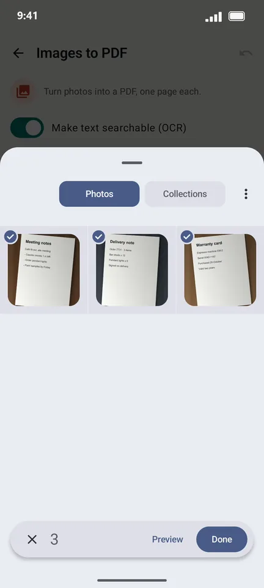
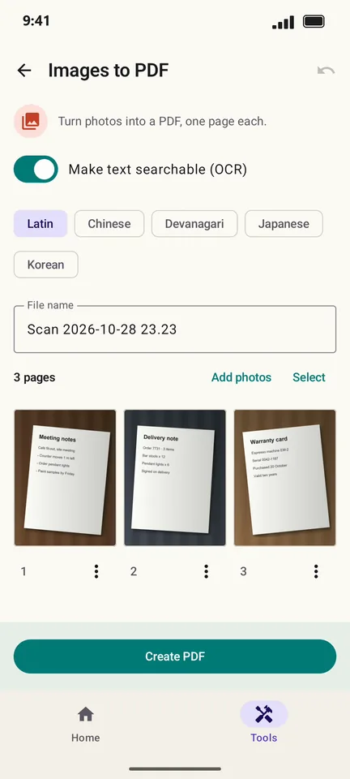

How to turn photos into a PDF on Android
Photos of a document are hard to send and harder to print. PageCat turns any photos from your gallery into one PDF, one page per photo, and can make the text in them searchable.
Steps
Open the Tools tab, tap Images to PDF and choose the photos.

Tap Done. Each photo becomes a page; drag to reorder or use the ⋮ menu to rotate.

Tap Create PDF, then Save to… or Share.

Good to know
- Photos keep their own shape; each page is sized to its photo.
- For photos of paper, Scan document gives a cleaner result because it straightens and crops the page.
Questions
Does it work with PNG and HEIC photos?
It works with the photo formats your phone's gallery can open, including JPG and PNG.
Is there a limit on photos?
No fixed limit. Each photo is one page.